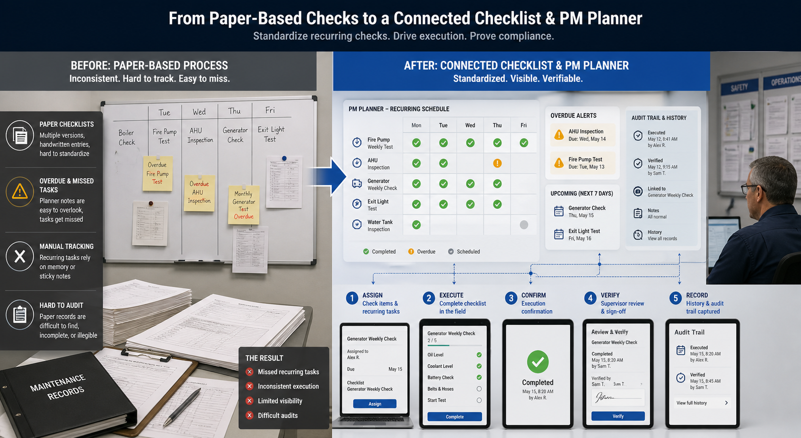

Web Application
Ceklist Management System
Checklist and planner workflow for recurring operations, PM activities, and task accountability.
Workflow Illustration

The checklist workflow standardizes recurring checks that used to depend on paper forms, memory, or planner notes. Assigned check items, execution confirmation, verification, overdue visibility, and audit history become easier to manage through one connected routine-operations system.
Business Problem
Routine operational checks and planner-based tasks become harder to audit when handled in disconnected files, paper forms, or manual notes.
My Contribution
Built the task flow, PM planner structure, and internal UI for making recurring checklist execution easier to track, verify, and review.
Operational Flow
- Recurring tasks and checklist items are scheduled through a planner-based routine flow.
- Assigned users execute checks and record completion in a more structured way.
- Verification and overdue visibility help supervisors monitor execution quality.
- History and audit trail make recurring operational compliance easier to review.
Key Capabilities
- Recurring checklist and PM planner scheduling.
- Execution and completion confirmation workflow.
- Overdue task visibility and verification support.
- Audit-oriented history for routine operations.
Tech Stack
PHP, MySQL, Tailwind CSS, jQuery.
Current Status
Status: Internal checklist workflow focused on recurring task standardization, execution visibility, and reviewable operational history.


Shared media reflects sanitized internal workflow examples.